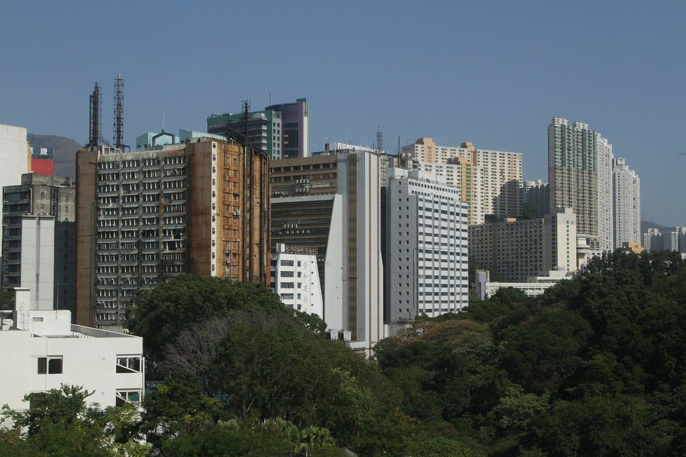
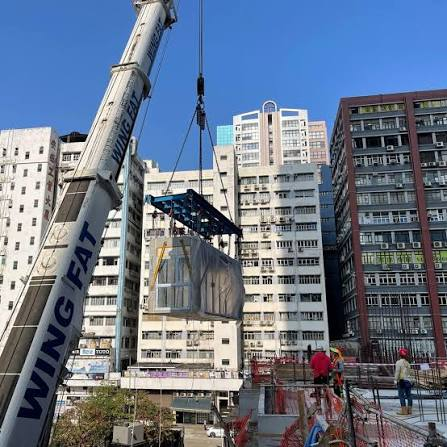
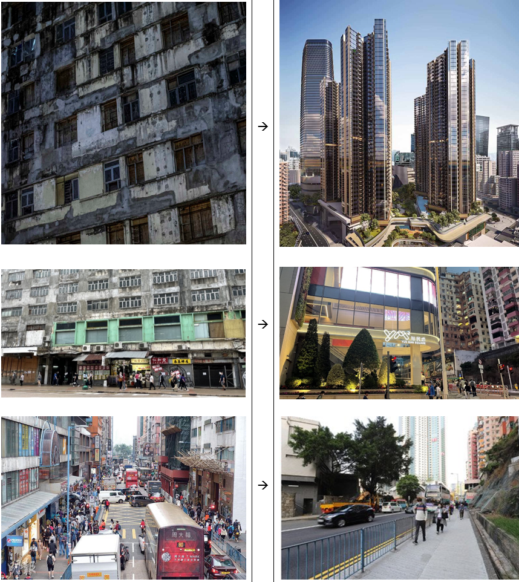
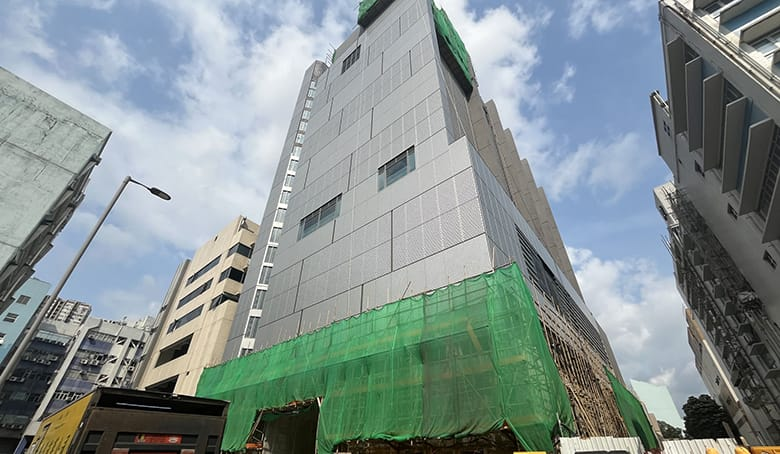

Industrial buildings in Hong Kong: does supply & demand still work?
Hong Kong still has industrial land and buildings, but manufacturing has largely left. This presentation looks at why, how much industrial supply is left, what demand looks like, and whether converting industrial buildings is worth it.
Map: Outline Zoning Plan industrial zones (I, I(D), OU(Business)). Click any zone for details. Use ← → to navigate.
1 · Why manufacturing left
The factories moved across the border

Photo: add credit here
Land and labour are far cheaper in Shenzhen, Dongguan, Huizhou and Zhuhai.
Economies of scale: mainland factories are huge single-storey or low-rise plants. Hong Kong factories are small units stacked in multi-storey flatted factory buildings.
Supply chains: raw materials are already in mainland China. Shipping materials into Hong Kong to make things costs more than making them there and moving the finished product in.
Result: Hong Kong's comparative advantage moved to trade, logistics and services. Making things here mostly stopped.
1 · Case study
Modular Integrated Construction (MiC)

Photo: add credit here
Even Hong Kong's newest construction method follows the same pattern:
① Made in the Greater Bay Area. Modules for the Tseung Kwan O Fire Services quarters were built in a factory in Huizhou.
② Shipped in. They came by barge to places like the River Trade Terminal in Tuen Mun, or by truck through the land crossings.
③ Assembled in Hong Kong. Only the final stacking and fitting-out happens on site.
The value-adding manufacturing happens in mainland China. Hong Kong does the assembly.
Locations on the map are approximate.
2 · Supply
Very little land is zoned industrial
Measured from Planning Department OZP zones (GIS):
–
Industrial (I)
–
Industrial Group D (I(D))
–
OU (Business)
–
Total industrial-type land
That is just – of all land covered by zoning plans.
Land area only (not floor space). Areas cover OZP-zoned land only and are calculated on the ellipsoid.
2 · Supply
Kowloon East: the planners already moved on

Photo: add credit here
Old factory districts like Kwun Tong, Kowloon Bay and San Po Kong have mostly been rezoned from Industrial to OU (Business).
Business zoning allows offices, shops and non-polluting industry.
The planning system itself is shrinking "pure" industrial supply.
Many buildings are still physically factories, so the zoning has changed but the buildings haven't.
2 · Supply
Little land, but still too much space
7.6%
Flatted factory vacancy, end-2025 (7.0% in 2024)
1.23M m²
Vacant flatted factory space
79,000 m²
New supply forecast 2026
123,000 m²
New supply forecast 2027
Supply of land is small, but supply of floor space is still larger than demand, and more is coming.
3 · Demand
Owners are fleeing; users are hanging on
Prices 2024−16.2%
Prices 2025−15.2%
Rents 2024−2.8%
Rents 2025−3.0%
Prices fell ~29% in two years, about 5× faster than rents.
Net take-up was −212,000 m² in 2024: businesses gave back more space than they took.
But sales rose 34% in 2025. Buyers came back only at much lower prices.
Demand to own industrial buildings has collapsed. Demand to use them is weak but still there.
Flatted factories, Q4 vs Q4.
4 · Conversion
Converting needs a land premium
To redevelop a pre-1987 industrial building for a new use, the owner pays the government a land premium. Standard rates (HK$/m² of floor area) from 1 April 2026:
Region
Before (Ind.)
Commercial
Residential
HK Island
25,500
42,000
84,000
Kowloon East
25,500
36,000
63,000
Kowloon West
22,500
35,000
70,000
NT South
22,500
31,000
46,000
NT North
13,500
17,000
33,000
Premium = After rate × After floor area − Before rate × Before floor area
4 · Conversion
Try it: what would conversion cost?
–
Premium only. Demolition, construction, holding costs and buying out other owners all come on top.
4 · Conversion
Is it really worth it?
Premiums got cheaper: Kowloon East rates fell from $40,000 / $65,000 (2023) to $25,500 / $36,000, about 40% lower.
But only because the end product is worth less too. Office vacancy reached 17.6% at end-2025, so converting to offices means entering an oversupplied market.
Residential pays most but has the biggest premium, and only works where zoning allows housing.
Fragmented ownership: a forced sale needs 80% of the shares to be owned by one party, so small owners can hold out for years.
For many buildings the numbers don't add up, so owners hold, lease cheaply, or wait.
5 · Counterpoint
Demand is shifting, not disappearing

Photo: add credit here
Data centres: Amazon Data Services bought two data centres in Fanling for HK$2.45 billion (Q3 2026).
Cold storage: Brookfield bought a Tsing Yi building for ~HK$663 million to convert to cold storage.
Logistics and e-commerce: companies are moving from open-air storage into modern warehouses.
Policy: the 2025 Policy Address backs new industrialisation, with I&T land planned in the Northern Metropolis.
Locations on the map are approximate.
Conclusion
Traditional supply & demand for factories no longer works in Hong Kong
Why: manufacturing is cheaper and has scale in the Greater Bay Area. Hong Kong imports finished goods (even MiC modules).
Supply: little land, but still more floor space than people want.
Demand: prices down ~29% in two years. Users remain, investors left.
Conversion: premiums plus an office glut mean it often doesn't pay.
Future: industrial land is turning into logistics, data and tech space.